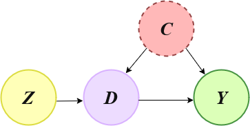

Note
-
Download Jupyter notebook:
https://docs.doubleml.org/stable/examples/R_double_ml_basic_iv.ipynb.
R: Basic Instrumental Variables Calculation#
In this example we show how to use the DoubleML functionality of Instrumental Variables (IVs) in the basic setting shown in the graph below, where:
Z is the instrument
C is a vector of unobserved confounders
D is the decision or treatment variable
Y is the outcome
So, we will first generate synthetic data using linear models compatible with the diagram, and then use the DoubleML package to estimate the causal effect from D to Y.
We assume that you have basic knowledge of instrumental variables and linear regression.
[1]:
library(DoubleML)
library(mlr3learners)
set.seed(1234)
options(warn=-1)
Loading required package: mlr3
Instrumental Variables Directed Acyclic Graph (IV - DAG)#

Data Simulation#
This code generates n samples in which there is a unique binary confounder. The treatment is also a binary variable, while the outcome is a continuous linear model.
The quantity we want to recover using IVs is the decision_impact, which is the impact of the decision variable into the outcome.
[2]:
n <- 10000
decision_effect <- -2
instrument_effect <- 0.7
confounder <- rbinom(n, 1, 0.3)
instrument <- rbinom(n, 1, 0.5)
decision <- as.numeric(runif(n) <= instrument_effect*instrument + 0.4*confounder)
outcome <- 30 + decision_effect*decision + 10 * confounder + rnorm(n, sd=2)
df <- data.frame(instrument, decision, outcome)
Naive estimation#
We can see that if we make a direct estimation of the impact of the decision into the outcome, though the difference of the averages of outcomes between the two decision groups, we obtain a biased estimate.
[3]:
mean(df[df$decision==1, 'outcome']) - mean(df[df$decision==0, 'outcome'])
Using DoubleML#
DoubleML assumes that there is at least one observed confounder. For this reason, we create a fake variable that doesn’t bring any kind of information to the model, called obs_confounder.
To use the DoubleML we need to specify the Machine Learning methods we want to use to estimate the different relationships between variables:
ml_gmodels the functional relationship betwen theoutcomeand the pairinstrumentand observed confoundersobs_confounders. In this case we choose aLinearRegressionbecause the outcome is continuous.ml_mmodels the functional relationship betwen theobs_confoundersand theinstrument. In this case we choose aLogisticRegressionbecause the outcome is dichotomic.ml_rmodels the functional relationship betwen thedecisionand the pairinstrumentand observed confoundersobs_confounders. In this case we choose aLogisticRegressionbecause the outcome is dichotomic.
Notice that instead of using linear and logistic regression, we could use more flexible models capable of dealing with non-linearities such as random forests, boosting, …
[4]:
df['obs_confounders'] <- 1
obj_dml_data = DoubleMLData$new(
df, y_col="outcome", d_col = "decision",
z_cols= "instrument", x_cols = "obs_confounders"
)
ml_g = lrn("regr.lm")
ml_m = lrn("classif.log_reg")
ml_r = ml_m$clone()
iv_2 = DoubleMLIIVM$new(obj_dml_data, ml_g, ml_m, ml_r)
result <- iv_2$fit()
INFO [11:52:40.060] [mlr3] Applying learner 'classif.log_reg' on task 'nuis_m' (iter 1/5)
INFO [11:52:40.240] [mlr3] Applying learner 'classif.log_reg' on task 'nuis_m' (iter 2/5)
INFO [11:52:40.287] [mlr3] Applying learner 'classif.log_reg' on task 'nuis_m' (iter 3/5)
INFO [11:52:40.329] [mlr3] Applying learner 'classif.log_reg' on task 'nuis_m' (iter 4/5)
INFO [11:52:40.371] [mlr3] Applying learner 'classif.log_reg' on task 'nuis_m' (iter 5/5)
INFO [11:52:40.478] [mlr3] Applying learner 'regr.lm' on task 'nuis_g0' (iter 1/5)
INFO [11:52:40.498] [mlr3] Applying learner 'regr.lm' on task 'nuis_g0' (iter 2/5)
INFO [11:52:40.517] [mlr3] Applying learner 'regr.lm' on task 'nuis_g0' (iter 3/5)
INFO [11:52:40.536] [mlr3] Applying learner 'regr.lm' on task 'nuis_g0' (iter 4/5)
INFO [11:52:40.561] [mlr3] Applying learner 'regr.lm' on task 'nuis_g0' (iter 5/5)
INFO [11:52:40.636] [mlr3] Applying learner 'regr.lm' on task 'nuis_g1' (iter 1/5)
INFO [11:52:40.656] [mlr3] Applying learner 'regr.lm' on task 'nuis_g1' (iter 2/5)
INFO [11:52:40.675] [mlr3] Applying learner 'regr.lm' on task 'nuis_g1' (iter 3/5)
INFO [11:52:40.698] [mlr3] Applying learner 'regr.lm' on task 'nuis_g1' (iter 4/5)
INFO [11:52:40.717] [mlr3] Applying learner 'regr.lm' on task 'nuis_g1' (iter 5/5)
INFO [11:52:40.797] [mlr3] Applying learner 'classif.log_reg' on task 'nuis_r0' (iter 1/5)
INFO [11:52:40.827] [mlr3] Applying learner 'classif.log_reg' on task 'nuis_r0' (iter 2/5)
INFO [11:52:40.861] [mlr3] Applying learner 'classif.log_reg' on task 'nuis_r0' (iter 3/5)
INFO [11:52:40.889] [mlr3] Applying learner 'classif.log_reg' on task 'nuis_r0' (iter 4/5)
INFO [11:52:40.931] [mlr3] Applying learner 'classif.log_reg' on task 'nuis_r0' (iter 5/5)
INFO [11:52:41.018] [mlr3] Applying learner 'classif.log_reg' on task 'nuis_r1' (iter 1/5)
INFO [11:52:41.051] [mlr3] Applying learner 'classif.log_reg' on task 'nuis_r1' (iter 2/5)
INFO [11:52:41.079] [mlr3] Applying learner 'classif.log_reg' on task 'nuis_r1' (iter 3/5)
INFO [11:52:41.108] [mlr3] Applying learner 'classif.log_reg' on task 'nuis_r1' (iter 4/5)
INFO [11:52:41.140] [mlr3] Applying learner 'classif.log_reg' on task 'nuis_r1' (iter 5/5)
[5]:
result
================= DoubleMLIIVM Object ==================
------------------ Data summary ------------------
Outcome variable: outcome
Treatment variable(s): decision
Covariates: obs_confounders
Instrument(s): instrument
Selection variable:
No. Observations: 10000
------------------ Score & algorithm ------------------
Score function: LATE
DML algorithm: dml2
------------------ Machine learner ------------------
ml_g: regr.lm
ml_m: classif.log_reg
ml_r: classif.log_reg
------------------ Resampling ------------------
No. folds: 5
No. repeated sample splits: 1
Apply cross-fitting: TRUE
------------------ Fit summary ------------------
Estimates and significance testing of the effect of target variables
Estimate. Std. Error t value Pr(>|t|)
decision -1.8904 0.1492 -12.67 <2e-16 ***
---
Signif. codes: 0 ‘***’ 0.001 ‘**’ 0.01 ‘*’ 0.05 ‘.’ 0.1 ‘ ’ 1
We can see that the causal effect is estimated without bias.
References#
Ruiz de Villa, A. Causal Inference for Data Science, Manning Publications, 2024.